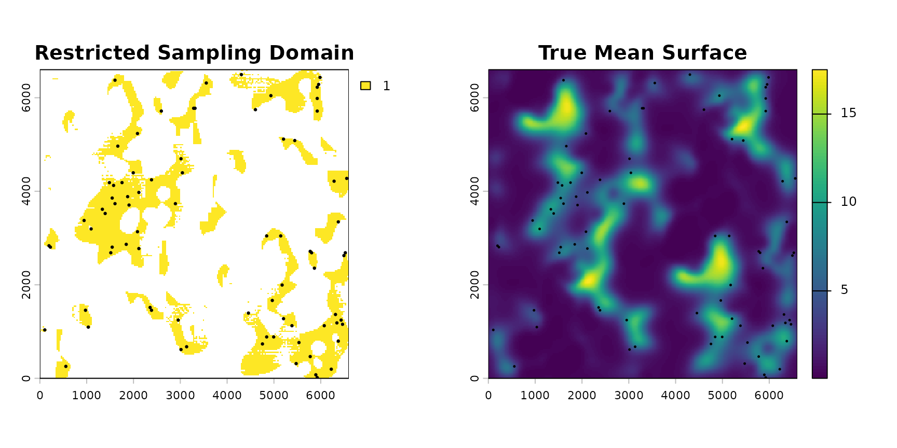
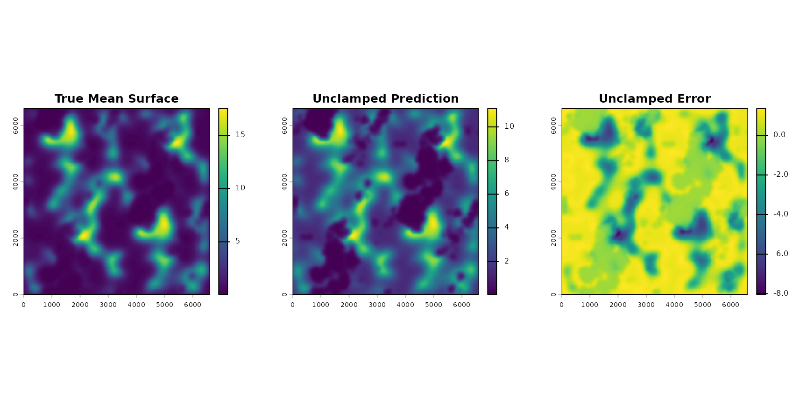
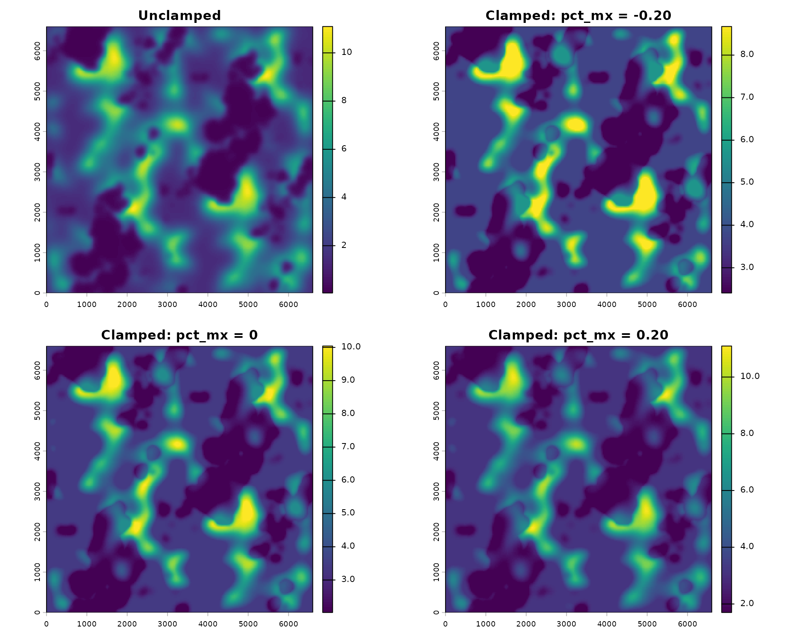
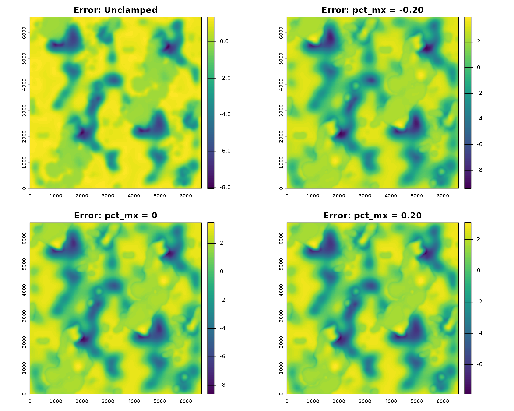

Spatial Projection and Clamping
Bill Peterman
Source:vignettes/spatial_projection_clamping.Rmd
spatial_projection_clamping.Rmd## Loading required package: terra## terra 1.9.50## Loading required package: sf## Linking to GEOS 3.14.1, GDAL 3.12.2, PROJ 9.7.1; sf_use_s2() is TRUE##
## Attaching package: 'MASS'## The following object is masked from 'package:terra':
##
## area
knitr::opts_chunk$set(
collapse = TRUE,
comment = "#>",
fig.align = "center",
message = FALSE,
warning = FALSE
)Introduction to Spatial Projection
From fitted model to landscape map
Once distance-weighted scales of effect have been estimated with
multiScale_optim(), a natural next step is to ask:
where across the landscape is my study species most likely to
be abundant, or most likely to occur? Answering this question requires
spatial projection: applying the fitted model to
covariate rasters covering the entire region of interest to generate a
continuous map of the predicted response.
The projection workflow in multiScaleR involves two
steps:
kernel_scale.raster(): Apply the fitted smoothing kernels (at the optimized σ values) to the full-extent raster layers. This transforms each raw habitat raster into a distance-weighted, kernel-smoothed version that mirrors what the model “saw” during fitting. Whenscale_center = TRUE, the smoothed values are also standardized using the mean and SD from the sample points, ensuring the predictions are on the correct scale.terra::predict(): Use the scaled rasters and the fitted model object to generate predictions at every raster cell.
This is conceptually straightforward, but a practical problem emerges at step 1: the full landscape almost always contains environments that were not represented in the sampled data. This is extrapolation, and it can cause serious problems.
The extrapolation problem
Think of your statistical model as a function that was learned from a particular slice of environmental space (the range of covariate values encountered at your sampling locations). The model may fit that slice well. But if you project it onto landscape cells with very different covariate values, the model is being asked to make predictions in conditions it has never “seen.”
With linear models this is manageable; predictions outside the training range are just extrapolations of the fitted line. But ecological models almost always use nonlinear link functions (log for Poisson counts, logit for binomial occupancy). Under a log-link, even modest extrapolation in covariate space can produce predicted abundances that are orders of magnitude larger than anything observed in the training data. The model will confidently produce extreme predictions in regions where it has no empirical support.
A simple analogy: imagine you calibrated a thermometer using water temperatures between 15°C and 25°C. The calibration works well in that range. Extrapolating the calibration curve to 80°C would give you a temperature reading, but you would have no way of knowing if it was accurate, and for a nonlinear instrument, it probably would not be.
What clamping does
Clamping is a safeguard that constrains projected covariate values to stay within a user-defined range derived from the training data. Any raster cell whose kernel-smoothed covariate value falls below the training minimum is set to that minimum; any cell above the training maximum is set to that maximum. This limits the model to operating within, or near, the environmental space it was actually fitted on.
The pct_mx argument in
kernel_scale.raster() controls exactly where those
boundaries are set:
pct_mx value |
Effect |
|---|---|
0 |
Clamp to the exact observed min/max in the training data |
> 0 (e.g., 0.10) |
Expand the admissible range by 10% of the observed range, allowing limited extrapolation |
< 0 (e.g., -0.10) |
Contract the admissible range by 10%; more conservative, avoids even edge-of-range predictions |
Clamping does not eliminate the extrapolation problem. A clamped model will still produce predictions in parts of the landscape where it was never calibrated; those predictions will just not explode to implausible values. Think of clamping as guardrails, not a solution to sampling bias.
This vignette
This vignette has two goals:
- Demonstrate how to project a fitted
multiScaleRmodel across a raster landscape. - Show, with a deliberately exaggerated example, how clamping and
pct_mxalter projected covariate values and resulting predictions.
The example uses a biased sampling design to make the extrapolation problem visible. In most field studies the problem is subtler, but the mechanism is the same.
Demonstrating Clamping Under Controlled Extrapolation
Conceptual setup
To make the role of clamping explicit, we use a deliberately biased sampling design.
The idea: We simulate a landscape with a known response surface (we define the true ecological pattern ourselves). Then we pretend to “survey” it, but we only place sample points in a narrow slice of the available environmental gradient, leaving most of the landscape unsampled. We fit the model using only those biased samples, then project it across the entire landscape.
This creates two clearly distinguishable domains:
- a supported domain (the slice where we sampled): projected covariate values fall within the training range; the model is interpolating.
- an unsupported domain (the rest of the landscape): projected covariate values fall outside the training range; the model is extrapolating.
Because we simulated the data, we know the true response surface and can directly measure how well each projection approach reproduces it and how much clamping helps.
The example is intentionally exaggerated. The sampling bias is much stronger than you would encounter in most field studies. This is deliberate: we want to make the mechanism of clamping easy to see. In your own data, the effects may be subtler, but the principle is identical.
Step 1: Simulate a known landscape and response surface
We begin by simulating a raster landscape with two covariates
(bin1 and bin2: binary habitat
presence/absence surfaces). We then smooth those covariates using
known kernel parameters to define the true scales of effect.
This smoothed version represents the “ground truth” environmental
gradient that actually drives the ecological response.
set.seed(321)
# Simulate a raster landscape with two binary covariates
rs <- sim_rast(user_seed = 999, dim = 220, resolution = 30)
rs <- terra::subset(rs, c("bin1", "bin2"))
# Apply the TRUE smoothing used to generate the ecological signal
true_sigmas <- c(180, 90)
true_smoothed <- kernel_scale.raster(
raster_stack = rs,
sigma = true_sigmas,
kernel = "gaussian",
scale_center = FALSE,
verbose = FALSE
)We standardize each smoothed covariate across the full landscape. This sets the true environmental gradient: the values a model with perfect knowledge would use. Later, when we fit the model using only biased samples, the scaling will be done using only the sampled subset. That mismatch between “full-landscape scaling” and “sample-based scaling” is the source of the extrapolation problem we want to illustrate.
z_stack <- scale(true_smoothed)We now define the true response surface using known coefficients: a
strong positive effect of bin1 (habitat presence is good)
and a negative effect of bin2 (its presence is bad). We
apply a saturating transformation (tanh) to the linear
predictor before converting to counts; this prevents the predicted
surface from becoming arbitrarily large at the extremes, which would
swamp the visualization of what clamping actually does.
# Define true model coefficients
alpha <- 0.5
beta1 <- 1.25
beta2 <- -0.75
# Calculate the linear predictor
linpred_true <- alpha + (beta1 * z_stack$bin1) + (beta2 * z_stack$bin2)
# Saturate the linear predictor so extreme gradients remain interpretable
linpred_true <- 4 * tanh(linpred_true / 4)
# Convert to the expected count surface (Poisson mean)
true_mu <- exp(linpred_true)Step 2: Impose a biased sampling design
We now simulate the “field survey.” Instead of sampling randomly
across the full landscape, we restrict sample points to a narrow slice
of the available environmental gradient: locations with moderately high
bin1 values and intermediate bin2 values.
Think of this as a field survey where access constraints, land ownership, or opportunistic design led you to sample in a particular portion of the landscape, one that does not represent the full range of available conditions. The model you fit from these points will work well within that sampled range, but you are asking it to predict across a much wider range.
# Define a restricted environmental envelope for sampling
q1 <- quantile(values(z_stack$bin1), probs = c(0.50, 0.90), na.rm = TRUE)
q2 <- quantile(values(z_stack$bin2), probs = c(0.25, 0.75), na.rm = TRUE)
# Create a mask that isolates this specific domain
sample_mask <- z_stack$bin1
sample_mask[] <- ifelse(
z_stack$bin1[] >= q1[1] & z_stack$bin1[] <= q1[2] &
z_stack$bin2[] >= q2[1] & z_stack$bin2[] <= q2[2],
1, NA
)
# Sample only within this restricted domain
pts <- spatSample(
sample_mask,
size = 80,
method = "random",
na.rm = TRUE,
as.points = TRUE
)
# Extract the true mean surface at sampled points and simulate counts
mu_pts <- terra::extract(true_mu, pts)[, 2]
counts <- rpois(length(mu_pts), lambda = mu_pts)The left panel shows the restricted area where we sampled; the right
panel shows the true mean count surface. Notice that the sampled area
(left) covers only a portion of the landscape, missing both the
high-count areas driven by high bin1 and the
low-count areas driven by low bin1 or high
bin2. The model will have no direct information about these
extremes.
par(mfrow = c(1, 2))
# Plot the restricted sampling mask and points
plot(sample_mask, main = "Restricted Sampling Domain")
points(pts, pch = 16, cex = 0.45)
# Plot the true mean surface and points
plot(true_mu, main = "True Mean Surface")
points(pts, pch = 16, cex = 0.35)
Step 3: Fit the multiscale model
We now prepare the inputs required by multiScaleR, fit a
base Poisson GLM, and optimize scales of effect with
multiScale_optim(). A critical detail: all scaling and
centering is now derived from the sampled points only,
not the full landscape. This means the standardized covariate values on
the full raster will be centered and scaled relative to the sample mean
and SD, which may be quite different from the full-landscape mean and
SD.
# Prepare multiscale data objects based on the sampled points
kernel_inputs <- kernel_prep(
pts = pts,
raster_stack = rs,
max_D = 700,
kernel = "gaussian",
verbose = FALSE
)
# Combine count data with kernel predictors
dat <- data.frame(counts = counts, kernel_inputs$kernel_dat)
# Fit the base GLM
mod <- glm(counts ~ bin1 + bin2, family = poisson(), data = dat)
# Optimize scales of effect
opt_mod <- multiScaleR::multiScale_optim(
fitted_mod = mod,
kernel_inputs = kernel_inputs
)
#>
#>
#> Optimization complete
summary(opt_mod)
#>
#> Call:
#> multiScaleR::multiScale_optim(fitted_mod = mod, kernel_inputs = kernel_inputs)
#>
#>
#> Kernel used:
#> gaussian
#>
#> ***** Optimized Scale of Effect *****
#>
#> Mean SE 2.5% 97.5%
#> bin1 169.73906 37.55887 94.9498 244.5283
#> bin2 74.16083 25.07297 30.0000 124.0875
#>
#>
#> ====================================
#>
#> ***** Optimized Scale of Effect -- Distance *****
#> Scale distances (map units) at 90%, two definitions.
#>
#> 2D, radius of the circle for the ideal untruncated kernel (selected):
#> Mean 2.5% 97.5%
#> bin1 364.25 203.76 524.75
#> bin2 159.15 64.38 266.29
#>
#> 1D, along a line through the point (comparison):
#> Mean 2.5% 97.5%
#> bin1 279.20 156.18 402.21
#> bin2 121.98 49.35 204.11
#>
#>
#> ====================================
#>
#> ***** Fitted Model Summary *****
#>
#>
#> Call:
#> glm(formula = counts ~ bin1 + bin2, family = poisson(), data = data)
#>
#> Coefficients:
#> Estimate Std. Error z value Pr(>|z|)
#> (Intercept) 1.57365 0.05201 30.259 < 2e-16 ***
#> bin1 0.25598 0.04904 5.220 1.79e-07 ***
#> bin2 -0.14275 0.05908 -2.416 0.0157 *
#> ---
#> Signif. codes: 0 '***' 0.001 '**' 0.01 '*' 0.05 '.' 0.1 ' ' 1
#>
#> (Dispersion parameter for poisson family taken to be 1)
#>
#> Null deviance: 147.10 on 79 degrees of freedom
#> Residual deviance: 113.29 on 77 degrees of freedom
#> AIC: 380.89
#>
#> Number of Fisher Scoring iterations: 5
#>
#>
#>
#> ***** Follow-up recommendation *****
#> Recommended `max_D`: 700
#> Recommended starting `sigma` values:
#> bin1 bin2
#> 169.73906 74.16083
#>
#> Action:
#> Use the optimized parameters as efficient starting values if refitting.The Extrapolation Problem
Seeing extrapolation in practice
When kernel_scale.raster() is called with
scale_center = TRUE, it applies the fitted kernel smoothing
to the full raster, then standardizes the result using the mean and SD
from the training sample points. This is exactly the right thing to do
for prediction: it puts the raster on the same scale as the training
data.
The problem is that the full landscape contains cells with covariate values that lie outside the training range. Because we sampled from a restricted domain, there are parts of the landscape where the standardized values are very large or very small compared to anything the model was fit on. Under a log-link (Poisson GLM), even modestly large covariate values can produce very large predicted counts.
We first generate an unclamped projection to see this problem directly.
# Project covariates without clamping
r_unclamped <- kernel_scale.raster(
raster_stack = rs,
multiScaleR = opt_mod,
scale_center = TRUE,
clamp = FALSE, # Clamping disabled
verbose = FALSE
)
# Predict the expected counts
pred_unclamped <- predict(r_unclamped, opt_mod$opt_mod, type = "response")
# Calculate error (Predicted - True)
unclamped_error <- pred_unclamped - true_muThe table below makes the extrapolation explicit: it compares the range of each covariate in the training data (what the model “knows”) to the range across the full projected raster (what the model is being asked to predict for).
# Extract training values and projected raster values
train_vals <- opt_mod$opt_mod$model[, c("bin1", "bin2")]
proj_vals_unclamped <- as.data.frame(values(r_unclamped))
# Construct a table comparing the ranges
range_tab <- data.frame(
covariate = c("bin1", "bin2"),
train_min = c(min(train_vals$bin1, na.rm = TRUE), min(train_vals$bin2, na.rm = TRUE)),
train_max = c(max(train_vals$bin1, na.rm = TRUE), max(train_vals$bin2, na.rm = TRUE)),
raster_min_unclamped = c(min(proj_vals_unclamped$bin1, na.rm = TRUE),
min(proj_vals_unclamped$bin2, na.rm = TRUE)),
raster_max_unclamped = c(max(proj_vals_unclamped$bin1, na.rm = TRUE),
max(proj_vals_unclamped$bin2, na.rm = TRUE))
)
range_tab
#> covariate train_min train_max raster_min_unclamped raster_max_unclamped
#> 1 bin1 -1.6541511 2.546525 -5.3244750 3.132324
#> 2 bin2 -0.5688857 3.121812 -0.5688857 25.873197
par(mfrow = c(1, 3))
plot(true_mu, main = "True Mean Surface")
plot(pred_unclamped, main = "Unclamped Prediction")
plot(unclamped_error, main = "Unclamped Error")
The projected raster values extend considerably beyond the training
range (compare train_min/train_max to
raster_min_unclamped/raster_max_unclamped).
The three-panel figure shows what this looks like in practice: the “True
Mean Surface” is the pattern we are trying to recover, the “Unclamped
Prediction” shows what the model produces without any constraints, and
the “Unclamped Error” reveals where predictions diverge most from
reality. Extreme errors occur where the projected covariate values fall
farthest outside the training range.
Understanding and Applying Clamping
How clamping works
Clamping acts on projected covariate values before prediction. For each raster layer, it defines a lower bound and an upper bound based on the training data. Any raster cell whose projected value falls below the lower bound is set to the lower bound; any cell above the upper bound is set to the upper bound.
This is analogous to saying: “My model was fitted in a particular environmental range. I will not let it make predictions as if environmental conditions could be arbitrarily more extreme than anything I observed.”
Clamping is best viewed as a practical safeguard, not as a correction for model misspecification. It does not solve omitted variables, residual spatial structure, or novel combinations of predictors. It simply prevents individual projected covariate values from drifting arbitrarily far from the sampled domain. In most applications with reasonably representative sampling, the effect of clamping is modest. It matters most when sampling is strongly biased or when projecting to genuinely novel environments.
The pct_mx argument: tuning the guardrail
The pct_mx argument adjusts how the clamping bounds are
set relative to the observed training range.
Suppose covariate bin1 ranged from −1.2 to 2.4 in your
training data (a range of 3.6 units). Then:
pct_mx |
Lower bound | Upper bound | Effect |
|---|---|---|---|
0 |
−1.2 | 2.4 | Clamp to exact observed min/max |
0.10 |
−1.2 − 0.36 = −1.56 | 2.4 + 0.36 = 2.76 | Expand bounds by 10% of range each side |
−0.10 |
−1.2 + 0.36 = −0.84 | 2.4 − 0.36 = 2.04 | Contract bounds; more conservative |
pct_mx = 0 (strict clamping) is a
sensible default when you want predictions constrained to the observed
environmental space.
pct_mx > 0 is useful when your
sampling has a few outliers that pulled the observed range wider than
the “typical” covariate space, and you want to allow predictions
slightly beyond the bulk of the data.
pct_mx < 0 yields the most
conservative projections, restricting predictions to the interior of the
observed range. This can be useful when you have high confidence that
the extremes of your training data were unusual or unreliable.
Comparing different clamping settings
We now compare four projection strategies side by side. The
pct_mx values used here (±0.20) are intentionally strong to
make the effect visible.
- No clamping: baseline showing the extrapolation problem
-
Contracted bounds (
pct_mx = -0.20): most conservative; predictions anchored to the interior of the training range -
Strict clamping (
pct_mx = 0): predictions anchored to the exact observed min/max -
Expanded bounds (
pct_mx = 0.20): allows limited extrapolation beyond the observed range
# Contracted bounds
r_cn20 <- kernel_scale.raster(
raster_stack = rs,
multiScaleR = opt_mod,
scale_center = TRUE,
clamp = TRUE,
pct_mx = -0.20,
verbose = FALSE
)
# Strict clamping
r_c0 <- kernel_scale.raster(
raster_stack = rs,
multiScaleR = opt_mod,
scale_center = TRUE,
clamp = TRUE,
pct_mx = 0,
verbose = FALSE
)
# Expanded bounds
r_cp20 <- kernel_scale.raster(
raster_stack = rs,
multiScaleR = opt_mod,
scale_center = TRUE,
clamp = TRUE,
pct_mx = 0.20,
verbose = FALSE
)
# Generate predictions for each clamped raster
pred_cn20 <- predict(r_cn20, opt_mod$opt_mod, type = "response")
pred_c0 <- predict(r_c0, opt_mod$opt_mod, type = "response")
pred_cp20 <- predict(r_cp20, opt_mod$opt_mod, type = "response")
# Calculate errors
error_cn20 <- pred_cn20 - true_mu
error_c0 <- pred_c0 - true_mu
error_cp20 <- pred_cp20 - true_muThe table below shows how pct_mx progressively tightens
or loosens the bounds on each projected covariate. Compare
min_value and max_value across rows for each
covariate to see the guardrail moving.
proj_vals_cn20 <- as.data.frame(values(r_cn20))
proj_vals_c0 <- as.data.frame(values(r_c0))
proj_vals_cp20 <- as.data.frame(values(r_cp20))
range_tab_clamp <- data.frame(
covariate = rep(c("bin1", "bin2"), each = 4),
setting = rep(c("unclamped", "pct_mx = -0.20", "pct_mx = 0", "pct_mx = 0.20"), times = 2),
min_value = c(
min(proj_vals_unclamped$bin1, na.rm = TRUE),
min(proj_vals_cn20$bin1, na.rm = TRUE),
min(proj_vals_c0$bin1, na.rm = TRUE),
min(proj_vals_cp20$bin1, na.rm = TRUE),
min(proj_vals_unclamped$bin2, na.rm = TRUE),
min(proj_vals_cn20$bin2, na.rm = TRUE),
min(proj_vals_c0$bin2, na.rm = TRUE),
min(proj_vals_cp20$bin2, na.rm = TRUE)
),
max_value = c(
max(proj_vals_unclamped$bin1, na.rm = TRUE),
max(proj_vals_cn20$bin1, na.rm = TRUE),
max(proj_vals_c0$bin1, na.rm = TRUE),
max(proj_vals_cp20$bin1, na.rm = TRUE),
max(proj_vals_unclamped$bin2, na.rm = TRUE),
max(proj_vals_cn20$bin2, na.rm = TRUE),
max(proj_vals_c0$bin2, na.rm = TRUE),
max(proj_vals_cp20$bin2, na.rm = TRUE)
)
)
range_tab_clamp
#> covariate setting min_value max_value
#> 1 bin1 unclamped -5.3244750 3.132324
#> 2 bin1 pct_mx = -0.20 -1.3233209 2.037220
#> 3 bin1 pct_mx = 0 -1.6541511 2.546525
#> 4 bin1 pct_mx = 0.20 -1.9849813 3.055830
#> 5 bin2 unclamped -0.5688857 25.873197
#> 6 bin2 pct_mx = -0.20 -0.4551086 2.497450
#> 7 bin2 pct_mx = 0 -0.5688857 3.121812
#> 8 bin2 pct_mx = 0.20 -0.5688857 3.746175pct_mx smoothly moves the boundaries inward (negative)
or outward (positive) from the observed training range. Visual
inspection below lets you see how this translates into prediction maps
and error surfaces:
par(mfrow = c(2, 2))
plot(pred_unclamped, main = "Unclamped")
plot(pred_cn20, main = "Clamped: pct_mx = -0.20")
plot(pred_c0, main = "Clamped: pct_mx = 0")
plot(pred_cp20, main = "Clamped: pct_mx = 0.20")
par(mfrow = c(2, 2))
plot(unclamped_error, main = "Error: Unclamped")
plot(error_cn20, main = "Error: pct_mx = -0.20")
plot(error_c0, main = "Error: pct_mx = 0")
plot(error_cp20, main = "Error: pct_mx = 0.20")
Two patterns stand out. First, the unclamped prediction diverges most
from the true surface in the unsupported domain (areas not sampled).
Second, more aggressive clamping (more negative pct_mx)
brings predictions closer to the “flat” reference level in unsupported
areas, at the cost of also flattening spatial variation in the supported
domain. The right choice of pct_mx depends on how much you
trust the model to extrapolate: if your sampling was broadly
representative, mild or no clamping is appropriate; if sampling was
narrow or biased, stricter clamping (or pct_mx < 0) is
more defensible.
Quantifying prediction error: inside vs. outside the sampled domain
Visual comparisons are useful, but separating error into the supported and unsupported domains makes the trade-off explicit. RMSE inside the sampled domain reflects how well the model recovers the true surface in the region where it has training data. RMSE outside measures how well it extrapolates to unsampled conditions.
We expect clamping to reduce error outside the sampled domain (by preventing extreme extrapolations), potentially at a small cost inside (by anchoring some predictions near the training boundary rather than allowing full model flexibility).
# Create masks representing areas inside and outside the sampled domain
inside_mask <- sample_mask
outside_mask <- sample_mask
inside_mask[] <- ifelse(!is.na(sample_mask[]), 1, NA)
outside_mask[] <- ifelse(is.na(sample_mask[]), 1, NA)
# Helper function to compute RMSE
rmse <- function(pred, truth, mask) {
p <- values(pred, mat = FALSE)
t <- values(truth, mat = FALSE)
m <- values(mask, mat = FALSE)
idx <- !is.na(m) & is.finite(p) & is.finite(t)
sqrt(mean((p[idx] - t[idx])^2, na.rm = TRUE))
}
# Compile RMSE scores into a table
rmse_tab <- data.frame(
model = c("unclamped", "pct_mx = -0.20", "pct_mx = 0", "pct_mx = 0.20"),
RMSE_inside = c(
rmse(pred_unclamped, true_mu, inside_mask),
rmse(pred_cn20, true_mu, inside_mask),
rmse(pred_c0, true_mu, inside_mask),
rmse(pred_cp20, true_mu, inside_mask)
),
RMSE_outside = c(
rmse(pred_unclamped, true_mu, outside_mask),
rmse(pred_cn20, true_mu, outside_mask),
rmse(pred_c0, true_mu, outside_mask),
rmse(pred_cp20, true_mu, outside_mask)
)
)
rmse_tab
#> model RMSE_inside RMSE_outside
#> 1 unclamped 1.171159 1.780593
#> 2 pct_mx = -0.20 1.209432 2.678520
#> 3 pct_mx = 0 1.170548 2.405518
#> 4 pct_mx = 0.20 1.170914 2.221817In most applications, differences among projection methods will be modest in the supported domain because prediction is essentially interpolation; the model stays within its training space. The larger and more ecologically consequential differences occur outside the sampled domain, where clamping prevents projected values from drifting arbitrarily far into covariate space the model was never trained on.
A caution worth stating clearly: clamping does not guarantee ecological realism outside the sampled domain. If you are projecting into genuinely novel environments (different climates, different land cover compositions, or different disturbance histories), no amount of clamping will make those predictions reliable. Clamping reduces the magnitude of extrapolation artifacts; it does not eliminate the inference risk of extrapolation. The best safeguard against unreliable projections is representative sampling that covers the full range of environmental conditions you want to predict.
Key Takeaways
Clamping is a practical safeguard against extreme marginal extrapolation during spatial projection.
- It constrains projected covariate values to a user-defined range derived from the training data.
- It can substantially reduce extreme prediction artifacts in poorly supported regions of environmental space.
- It does not eliminate unsupported inference, nor does it correct structural model misspecification.
The pct_mx argument provides a simple way to tune how
conservative that safeguard should be.
Practical guidance
| Situation | Recommended approach |
|---|---|
| Sampling broadly covers the landscape | Start without clamping; apply if predictions look unrealistic |
| Sampling restricted to a subset of conditions | Use clamp = TRUE, pct_mx = 0 as a
default |
| Projecting to a new landscape / time period | Use clamp = TRUE, consider pct_mx < 0;
interpret unsupported areas cautiously |
| Model includes a log or logit link | Clamping is especially important; unclamped extrapolation can be explosive |
A simple workflow for projection:
# Step 1: Project without clamping; inspect for unrealistic values
r_check <- kernel_scale.raster(raster_stack, multiScaleR = opt_mod,
scale_center = TRUE, clamp = FALSE)
plot(terra::predict(r_check, opt_mod$opt_mod, type = "response"))
# Step 2: If predictions look extreme outside sampled areas, apply clamping
r_clamped <- kernel_scale.raster(raster_stack, multiScaleR = opt_mod,
scale_center = TRUE, clamp = TRUE, pct_mx = 0)
plot(terra::predict(r_clamped, opt_mod$opt_mod, type = "response"))
# Step 3: Adjust pct_mx if needed and compareIn this vignette, extreme sampling bias and strong
pct_mx values were used deliberately so that the mechanism
of clamping is easy to see. In typical field studies, the effects will
be subtler, but the principle and the workflow are identical.